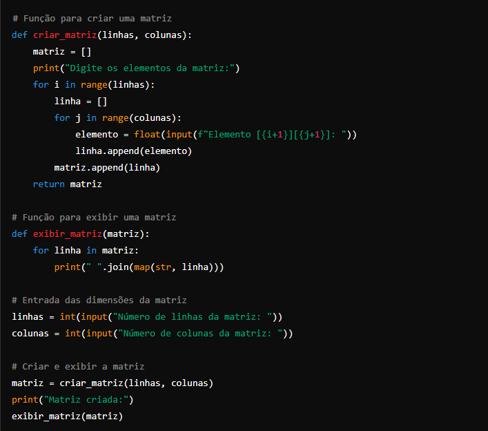

Programas de Matrizes

Explicação:
Função criar_matriz(linhas, colunas):
Cria uma matriz com o número de linhas e colunas especificado.
Solicita ao usuário que insira os elementos da matriz um por um.
Adiciona cada elemento inserido pelo usuário à matriz.
Função exibir_matriz(matriz):
Exibe a matriz na tela.
Usa join e map para formatar a saída de cada linha da matriz como uma string legível.
Entrada das dimensões da matriz:
O programa solicita ao usuário o número de linhas e colunas da matriz.
Criação e exibição da matriz:
Cria a matriz com as dimensões fornecidas pelo usuário e exibe o conteúdo.
Esse código é uma forma simples de interagir com matrizes em Python, permitindo que o usuário insira os valores e veja a matriz resultante.